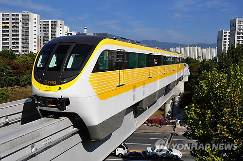

1. 개요
대구광역시 북구 동호동의 칠곡경대병원역과 수성구 범물1동의 용지역을 잇는 모노레일로 대한민국 최초의 상업 운행 대중교통 모노레일이다. 노선색은 노란색이다.
2009년 7월 24일에 착공하여 2015년 4월 23일에 개통했다.
2. 전 구간 주행 영상
용지-칠곡경대병원 전 구간 전면영상.
칠곡경대병원-용지 전 구간 전면영상.
3. 환승역
1호선 : 명덕역
3호선 : 청라언덕역
3. 특징
대구 도시철도의 1단계 노선들 중 마지막 노선으로, 1호선, 2호선에 이어 '3호선'으로 정해졌다. 배차간격은 평시 7분, 출퇴근시간 5분이다.
착공시에는 경전철의 일종이라는 이유로 평상시 (NH. Normal Hour) 5분, 출퇴근시(RH. Rush Hour) 3분이라고 알려졌으나 감사원에서 수요 뻥튀기를 지적하면서 조정되었다.
영업거리는 23.1㎞이며, 세계에서 가장 긴 무인운전 모노레일 노선이다.
대구 북서부 지역인 칠곡지구의 팔거천을 따라 대로와 합쳐진 다음 대구 시내로 들어가 팔달시장, 서대구고속버스터미널, 북구청, 달성공원, 서문시장, 청라언덕역,
명덕역, 대백프라자 등을 거쳐 대구 남동부 지역인 황금네거리, 수성못, 지산범물지구로 통하는 형태를 띠는 노선이다.